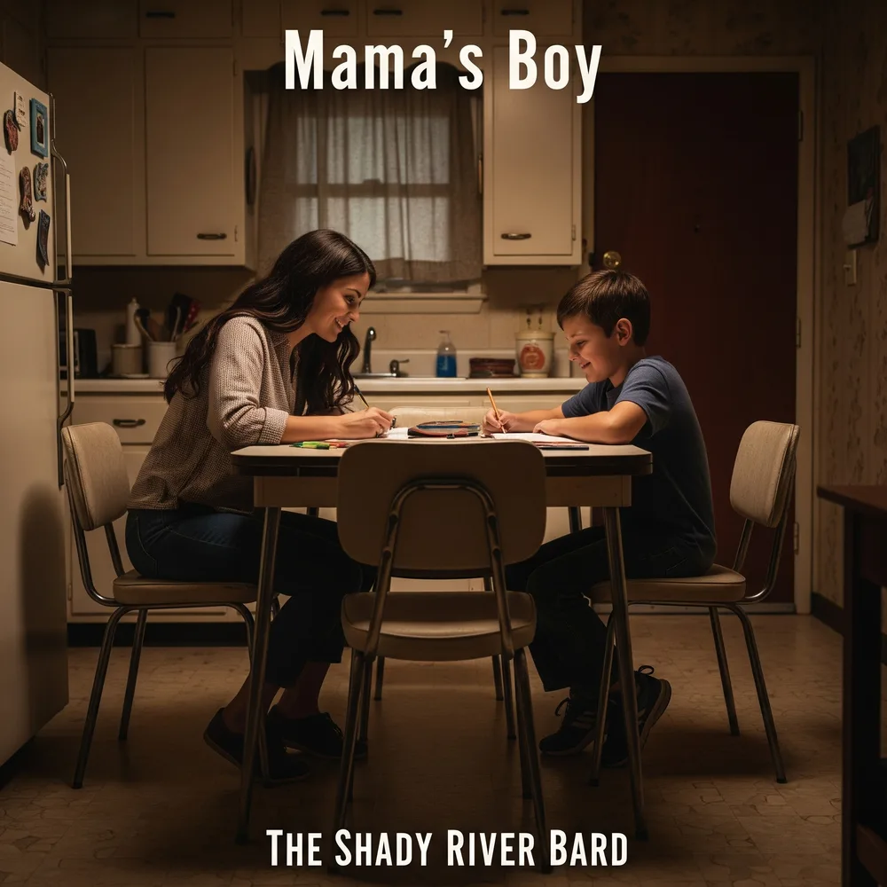

Mama's Boy
A Memoir of Judith Faye Adams ("Mama Judie") & A Tribute to Single Mothers in America
"It wasn't the love that you read in a book. It was messy and broken and hard to the touch. But a different kind of love can still mean so much."
Mama's Boy is the most intimate, unflinching, and heartfelt chapter in The Shady River Bard's 26-album discography. Begun as an artistic tribute to single mothers everywhere, the work crystallized into an autobiographical memoir of his mother, Judith Faye Adams ("Mama Judie", "M.J."), and his upbringing. Across 11 acoustic-driven songs, the album traces the bone-deep exhaustion of multiple jobs, the financial terror of single parenthood, the boyish sanctuary of drive-in movies, the harrowing storm of domestic violence, and a final, hard-won journey toward grief, forgiveness, and complicated grace.
The Invisible Backbone: Single Mothers in America
A forensic demographic audit examining the structural, financial, and time-poverty realities of the 7.3 million women anchoring the modern American family.
Four Acts of Survival, Protection & Grace
From the quiet pre-dawn third shift to the healing gold of Kintsugi acceptance
Complete Lyrics Vault & Track Lore 11 Tracks
Unabridged stanzas, musical arrangement notes, and official lyric video releases